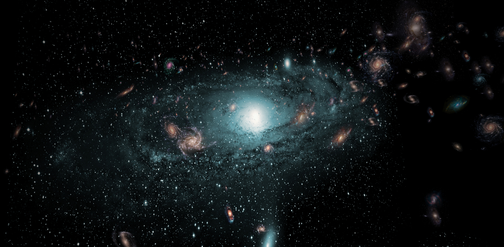

- Gravitational Anomaly: The Great Attractor is a region of space that exerts a strong gravitational pull on nearby galaxies. It is responsible for the peculiar motion of galaxies in our local universe, including the Milky Way.
- Obscured by the Zone of Avoidance: The Great Attractor is challenging to study because it is located in a region of the sky known as the "Zone of Avoidance," where the view is heavily obstructed by dust and stars from the Milky Way. This makes it difficult to directly observe the Great Attractor.
- Unknown Mass and Nature: The exact mass and nature of the Great Attractor remain uncertain. It is believed to be a massive concentration of both visible matter, such as galaxies and galaxy clusters, and dark matter. However, the exact composition and properties are still subject to ongoing research.
- Local Galaxy Flow: The Great Attractor is a key contributor to the motion of galaxies in our local universe. Galaxies in this region are being pulled towards it, leading to a peculiar flow of galaxies that cannot be explained by the influence of nearby galaxy clusters alone.
- Supercluster Structure: Some researchers suggest that the Great Attractor may be part of a larger supercluster of galaxies, which in turn is part of the even grander Laniakea Supercluster that encompasses our local cosmic neighborhood.
- Ongoing Research: Scientists continue to study the Great Attractor to gain a better understanding of its properties, mass distribution, and its role in the large-scale structure of the universe. This phenomenon remains a subject of active astronomical research, and new data and insights are continually emerging.
